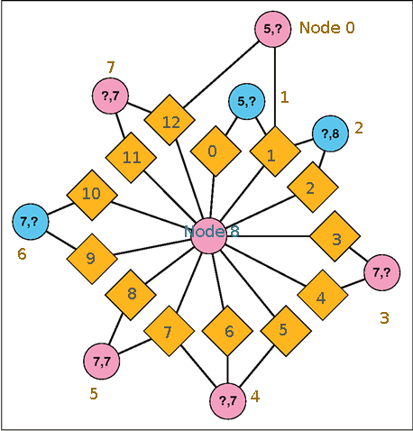
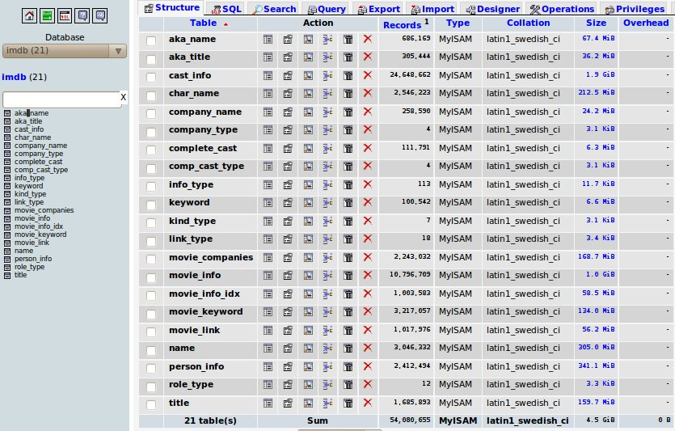

Solving "Role Playing 4"
Last month Games Magazine published their Online Contest 29 - Role Playing 4. Here is the puzzle:
{kind=link}
The circles represent actors, the diamonds represent movies they have been in. Pink is for actresses and blue is for actors. The numbers represent the numbers in their name: First, Last. Question marks indicate the number in their name is 3,4,6, or 9 letters. The center actress is what we are after. Note there are no clues for her name, but she has been in 13 movies. All movies in this puzzle are in the last century (2000-now) and are not shorts or documentaries.
Personally, I can’t imagine solving this puzzle without computer aid. Just ask yourself, how many actresses do you know with 7 letters in their last name? Uh….
So how will we go about solving this? Let us start by numbering the nodes to make them easy to reference: 
{kind=link}
My language of choice to solve this is going to be python. The first thing we will need though, is a copy of the IMDB. Luckily, the IMDB provides alternative interfaces besides their web interface, including plain text file downloads! And now we need the python-imdbpy package. It comes with a script that will allow you to import these imdb downloads into local mysql tables. For exact commands you can check out my README file, which includes exact wget, mysql, and python commands to import the database locally.
[caption id=“attachment_539” align=“alignnone” width=“835” caption=“I’m hopeless without phpmyadmin. Yes I am a noob.”][/caption]
{kind=link}
So you have a local copy of the imdb? Great! Now how will we go about solving the puzzle? My approach is to start first by narrowing down all of the possibilities for the actors in each node. The center node possibilities are going to be any actress who has been in 13 movies in the last century (only a few hundred). How will we narrow down the other nodes? Regular expressions. For example, node 0 has 5 letters in their first name, and 3,4,6 or 9 letters in their last. Here is a regular expression to find that:
^(([^- ,]{3})|([^- ,]{4})|([^- ,]{6})|([^- ,]{9})), [^- ,]{5}( |$)
Special thanks to Jafo and swarren for helping me create these. If you are wondering, the IMDB stores names as Last, First. We can narrow down these outlining actors (0-7) by only getting those actors/actresses with at least 2 movies in the last century, also if they have at least one record in the person_info table. (To exclude unpopular actors, extras, etc)
So now we have lists for the possibilities of each actor. In my implementation I actually used two programs, one the create these lists (find-actorpossibilities.py) and then a second program to utilize these lists to solve the problem (startatthecenter.py) I will now talk about the second one.
To solve this, I used a recursive (my favorite kind) function. It basically looks like this:
def recurse(level, centeractress, placedactors): if level == 8: # Print the solution print [actorname(i) for i in placedactors] print placedactors return for possibleactor in actor[level].possibilities: if possibleactor not in placedactors + [centeractress]: sharedmovies = moviesincommon(centeractress, possibleactor) if len(sharedmovies) >= len(actor[level].links): recurse(level+1, centeractress, copy.copy(placedactors + [possibleactor]))
The actor object has a property called links that has a tuple of the movies they are connected to. Most are 2 but one of them is 3. All I do is check how many movies they have been in with the center spoke. I’m not even testing what that movie is, or even recording it! To make it a little faster and cut out false positives, I check between outlining actors at key points where they overlap:
if level == 2: if len(moviesincommon3(placedactors[0], placedactors[1], centeractress)) < 1: return elif level == 3: if len(moviesincommon4(placedactors[0], placedactors[1], placedactors[2], centeractress)) < 1: return elif level == 6: if len(moviesincommon3(placedactors[4], placedactors[5], centeractress)) < 1: return elif level == 8: if len(moviesincommon3(placedactors[0], placedactors[7], centeractress)) < 1: return else: print "I HAZ A SOLUTION:" print [actorname(i) for i in placedactors] print placedactors return
These points are on the chart where multiple actors are in the same movie with the center actress. This prunes down quite a bit. All we need now some code to kick use off:
for actress in actor[8].possibilities: placedactors = [] placedmovies = [] print "We are recursing with " + actorname(actress) + " (" + str(actress) + ")" recurse(0, actress, copy.copy(placedactors) )
Notice we have to send copies of the list into the function because lists are mutable, and we need each branch of the recursive tree to have its own copy of the list. That is pretty much it. Just let it recurse through all the actors for a couple of hours. There are a couple of false positives, which actually may be technically correct (I didn’t thoroughly check them) due to foreign films, documentaries, etc.
If you would like to check out my code and run it for yourself, check it out!:
svn co https://dev.xkyle.com/gamesmagazine
Be sure to read the README for the prerequisites you will need. Also check out my wiki page for one possible complete solution and more information.
Comment via email